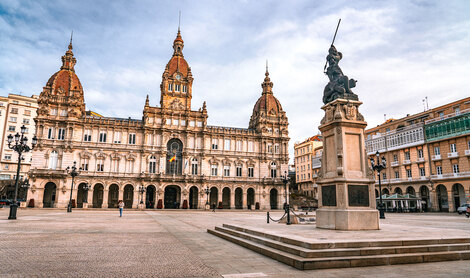

Cultura e historia de La Coruña
A Coruña es una ciudad con una historia milenaria que mira al mar desde sus orígenes. Fundada por los romanos en el siglo I a. C., su emblema más antiguo, la Torre de Hércules, sigue siendo testigo del paso del tiempo como el faro romano más antiguo en funcionamiento del mundo.
Durante la Edad Media, A Coruña se convirtió en un importante puerto comercial y pesquero, punto estratégico en las rutas marítimas del Atlántico. En el siglo XVI, la ciudad resistió con valentía el ataque de la Armada inglesa dirigida por Francis Drake, episodio que consolidó su carácter fuerte y orgulloso.
Con el paso de los siglos, A Coruña creció como una ciudad moderna, abierta al progreso y a la cultura. Hoy combina su legado histórico con una intensa vida urbana, donde conviven el pasado romano y medieval con la arquitectura contemporánea y un ambiente dinámico frente al mar.

La cultura coruñesa se vive en cada rincón de la ciudad: en sus calles, museos, plazas y en la hospitalidad de su gente. Su calendario está lleno de fiestas y eventos que reflejan la identidad gallega y su conexión con el Atlántico.
La Noche de San Juan, declarada Fiesta de Interés Turístico Internacional, transforma las playas en un espectáculo de hogueras, música y tradición. A lo largo del año, se celebran las Fiestas de María Pita, conciertos, ferias y festivales de arte que llenan de vida el verano coruñés.
La ciudad también es un referente en arte y conocimiento, con espacios como el Museo de Bellas Artes, la Casa de las Ciencias, el Aquarium Finisterrae o la Domus, que reflejan su compromiso con la educación y la divulgación cultural.
A Coruña no es solo una ciudad para ver, sino para sentir. Su historia, su arte y sus tradiciones se descubren en cada calle, en cada fiesta y en cada rincón, invitamos al viajero a formar parte de su esencia.